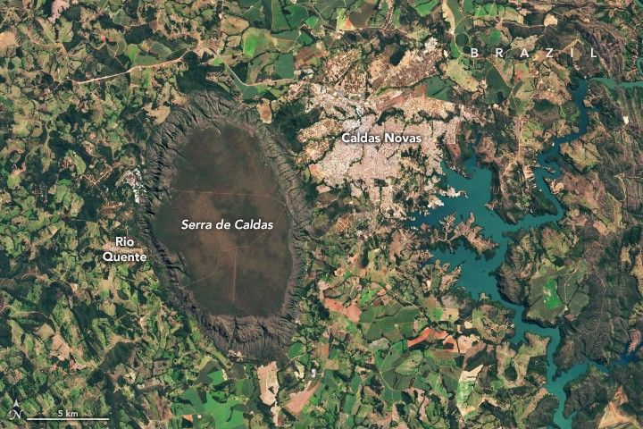

A Cerrado Above It All
Amid a patchwork of fields, towns, and winding rivers and roads in central Brazil stands a monolithic oval-shaped plateau. This conspicuous feature, Serra de Caldas (also known as the Caldas Novas dome and Caldas Ridge), is perched about 300 meters (1,000 feet) above the surrounding landscape in the state of Goiás.
The plateau is covered entirely by Cerrado, a biologically rich savanna and grassland ecosystem. The OLI-2 (Operational Land Imager-2) on Landsat 9 captured this image of the landform on May 19, 2025. The plateau, which measures approximately 20 kilometers (12 miles) long and 12 kilometers (7 miles) wide, was established as a state park in 1970. An optical illusion known as relief inversion may cause the raised land to appear lower than the surroundings.
The Cerrado covers about one-fifth of Brazil’s land area and represents the second-largest biome in South America behind the Amazon. These lands are home to thousands of plant, bird, reptile, and mammal species, many of which are found nowhere else on the planet. Over the past few decades, however, vast swaths of Cerrado have been converted into farms.
Among the unique Cerrado wildlife found on the Serra de Caldas is the Red-legged Seriema. This long-legged bird, selected as the mascot of the state park, has a bright-red beak, prominent forehead tuft, and distinctive call. Other iconic Cerrado species include the pequi tree, whose flowers are primarily pollinated by bats, and the lobeira, or “wolf’s plant,” whose fruit is sought by the maned wolf.
Hikers can visit a handful of waterfalls that cascade down the sides of the plateau when enough water is present. However, much of the rain that falls on the landform percolates through the ground to replenish aquifers below. The Brazilian Cerrado is sometimes referred to as the “cradle of waters” because of its role in recharging groundwater and feeding major river basins.
Water from the Serra de Caldas also feeds nearby natural hot springs. These springs are unique in that they are not heated by magma beneath the surface. Instead, water migrates down through faults and fractures in the rock, where it is heated by Earth’s naturally higher temperatures at depth before it circulates back to the surface. People can soak in the warm water at resorts in the nearby towns of Caldas Novas and Rio Quente, apt names that translate to “new hot springs” and “hot river.”